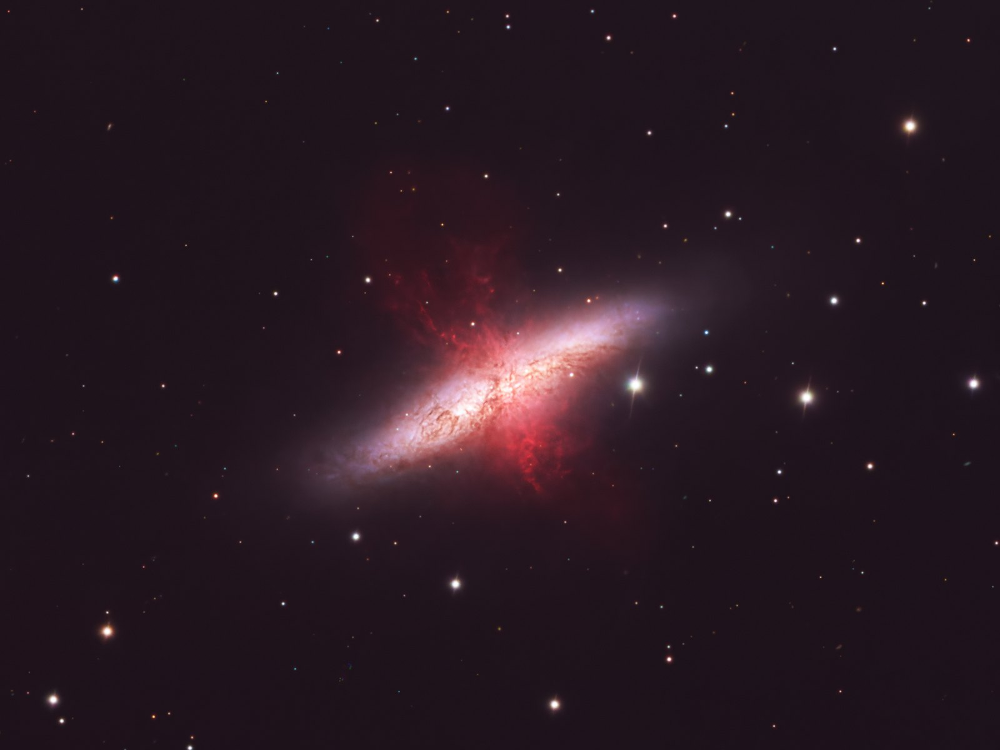

Tabula II · Pl. I · Deep sky · processed January 2026
M82, the Cigar Galaxy
M82, the Cigar Galaxy, photographed from the AstroCamp observatory.

M82 lies at about 3.5 megaparsecs, a little over 11 million light years1, 2, and is the prototypical starburst galaxy1. Its star formation surged in two episodes, about 10 and 5 million years ago, which are attributed to the gravitational interaction with its neighbour M813. The energy of its supernovae and stellar winds powers a wind that carries at least 30 solar masses of gas a year out of the galaxy1, in two opposite lobes whose gas moves away at between 525 and 655 km/s4. JWST shows that hydrogen-alpha marks the surface of cold clouds dragged along by that wind, which survive far from the starburst5; part of that glow is light from the central region scattered by dust6. What drives the wind is still under discussion: in 2026 XRISM measured central gas at about 23 million degrees, concludes that its thermal pressure is enough and suggests that cosmic rays are not needed1; a later study argues that the width of its lines requires supersonic motions and that part of the energy could go into magnetic fields and cosmic rays7.
The red filaments coming out of the disc in my image are that hydrogen of the wind8, inf..
- Object
- M82 · Ursa Major
- Type
- Starburst galaxy
- Site
- AstroCamp observatory
- Processed
- 29 Jan 2026
- Final size
- 5378 × 3440 px
References
- 1XRISM Collaboration (2026). “A fast starburst wind consumes most of the energy from supernovae”. Nature 651, 909. Title on arXiv: “A Fast, Hot Wind from a Nuclear Starburst”. arXiv:2603.24674 Published
- 2Goobar, A. et al. (2014). “The rise of SN 2014J in the nearby galaxy M82”. ApJ 784, L12. arXiv:1402.0849 Published
- 3Förster Schreiber, N. M. et al. (2003). “The Nature of Starburst Activity in M82”. ApJ 599, 193. arXiv:astro-ph/0309357 Published
- 4Shopbell, P. L. & Bland-Hawthorn, J. (1998). “The Asymmetric Wind in M82”. ApJ 493, 129. arXiv:astro-ph/9708038 Published
- 5Lopez, S. et al. (2026). “JWST Observations of Starbursts: PAHs Closely Trace the Cool Phase of M82's Galactic Wind”. ApJ Letters 999, L7. arXiv:2510.01314 Published
- 6Yoshida, M. et al. (2019). “Spectropolarimetry of the superwind filaments of the starburst galaxy M82 II: kinematics of the dust surrounding the nuclear starburst”. PASJ 71, 87. arXiv:1905.11897 Published
- 7Grayson, S. et al. (2026). “Supersonic Motion in the Driving Region of M82”. ApJ 1007, 65. arXiv:2607.07782 Published
- 8Own data: this plate.
inf. marks our own inference, calculation or comparison, not published.